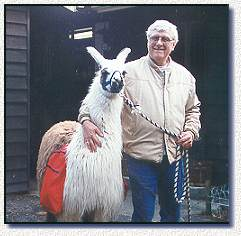

Jerry is just learning about packing, this was Charlies first try at wearing a day pack. This isn't going to be a pack llama that treks out into the wilderness, but one that goes on short day walks along a stream or park. All he will ever pack will be maybe lunch, bottle of wine, and a few odds and ends. We decided that we just didn't have the spunk to go climbing mountains, but it would be fun to get together with a few of our friends they like to do day packing. We have not yet gone on our first pack but will let you know how it goes when we do (two years later we haven't gone off our own property yet) but don't hold your breath. |  |
||
Traditionally only the males
are used for packing, the females are usually home having babies. Not all males
are suitable for packing and many breeders are not that knowledgable about what
it takes to be a pack llama. It's very important when looking for your first
pack animal to try and find a breeder that has experience in packing. There are
a lot of references available to help you find the right person that will guide
you in your new adventure. Below, you will find some points to consider in a
pack llama. If you are looking for a pack llama drop me a note, tell me your
location and I will try to refer you to somebody close by.Some Points to Consider for a Pack LlamaAge, If you want to start packing right away you need to find a llama no younger than two years old. Llamas are not considered to be mature until after 4 years old. A younger llama can have physical damage done to him if you start packing when he is to young. Physical Appearance, You need to look for things like strong legs, flat back, heavy bones but not fat. Think of it in terms as to the human companion you would want as a hiking partner. Would you want somebody that was physically fit, or an over weight heavy smoker? Personality, Llamas like people, come with a variety of personalities and "attitudes". You want a llama that is well trained wearing a halter and walking with lead rope. Will he walk willingly with your or do you have to drag him...does he have a personality like a mule and will only move when he darn well feels like it? Is he timid? You want a llama that isn't going to panic if you want to cross a stream or bridge. You encounter a lot of obstacles and they must be trusting to handle new situations Type of Wool, Llamas come in short, medium and long wool. Depending on the climate, terrain, etc. the type of wool is important. Long wool can get tangled in bushes, and accumulate debris which will require more grooming. You have to make sure the wool is fairly clean before placing a packing saddle on his back. I'm sure you wouldn't want to wear a sweater full of burrs. Learn, read, talk and don't rush into a purchase. Don't talk to just one person, there are some people out there with real ODD opinions. Until you have talked to several people you will have nothing to judge what is the norm.
Llamas In The House | Snow In The Pasture | Llamas Take A Sun bath | Llama Power Trips Obstacle Training | Playful Yearling Boys | Llamas and Dogs | Our Boys Learning How To Day pack | Obstacle Training | Funny Llama Photos | E-mail Copyright © 1996, 1997, 1998, by Sandy Stillwell. All rights reserved, including the right of reproduction in whole or in part, in any form. This document can not be reproduced without the written consent of the owner. |
|||